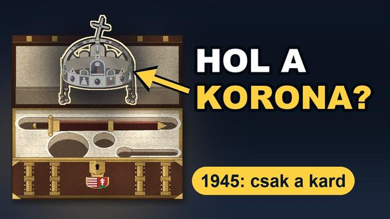

Megnézem a YouTube-onMiért őrizte Amerika 32 évig a magyar Szent Koronát?
Röviden: Az amerikai álláspont szerint az Egyesült Államok nem hadizsákmányként, hanem biztonsági letétként őrizte a koronát; a magyar fél ezt vitatta. A visszaadást a két ország viszonyának javulásához kötötte. A korona 1978 januárjában ért haza.
1945 nyarán az amerikaiak kinyitják a magyar koronázási ládát, és csak egy kard van benne. Hol volt a Szent Korona? Ebben a videóban végigkövetjük az útját: a koronaőrök 1945. márciusi éjszakai útjától a Mattsee mellett elásott benzineshordóig, a németországi évektől a Fort Knox-i tároló 31-es fülkéjéig, és megnézzük, miért csak 1978 januárjában adta vissza az Egyesült Államok.
A „Valóban?” rész egy ma is elérhető, 2013-as cikk állítását nézi meg arról, mikor és hogyan került a korona amerikai kézre. A videó a forrásokkal együtt mondja el, mi történt valójában.
A rész teljes szövege
1945 nyarán az amerikaiak kinyitják a magyar koronázási ládát. Csak egy kard van benne. Hol a korona? Ki rejtette el, és hova?
És ha megkerül, miért nem jön haza? 32 évig őrizte Amerika a magyar Szent Koronát, ebből csaknem 25 évig Fort Knoxban, egy tároló 31-es fülkéjében. Hogyan került oda? És miért pont 1978-ban adták vissza?
Kezdjük az elején. 1945. március 27-éről 28-ára virradó éjjel Szálasi Ferenc utasítására Pajtás Ernő ezredes és hét koronaőr egy teherautóval, Kőszegről indulva kivitte a koronázási ékszereket az országból. Glant Tibor történész szerint ezzel megszegték az esküjüket: a koronaőrök fogadalmának része volt, hogy a koronát nem engedik kivinni az országból. Az út Ausztrián át vezetett: Mürzsteg, Mariazell, Attersee, végül Mattsee, ahol Szálasi kísérete is tartózkodott.
Május 7-én a koronaőrség egy pap útján jelezte az amerikaiaknak, hogy elfogatásra vár, és az amerikai hadsereg őrizetbe vette őket, a ládával együtt. Az amerikaiak a ládát Augsburgba vitték. Amikor július 24-én előkerültek a kulcsok, kiderült, hogy csak a kard van benne. Hol volt a korona?
Mattsee mellett, a földben. Még az elfogásuk előtt a koronaőrök egy kettéfűrészelt benzineshordóban elásták a koronát, a jogart és az országalmát. A koronázási ládában csak a kard maradt. Egy amerikai alhadnagy, két koronaőr és egy amerikai őrmester dzsippel Mattsee-be ment, és kiásták a hordót.
Az amerikai hivatalos beszámoló szerint a koronát, a jogart és az országalmát 1945. július 25-én délben adták át. A koronázási palástot és a Szent Jobbot az amerikaiak már júniusban megtalálták. A Szent Jobbot Truman elnök engedélyével még 1945-ben hazaküldték, az augusztus 20-i körmenetre. A korona nem jött vele.
Megvolt hát a korona. Akkor miért nem jött haza? A korona Németországban maradt. Előbb Heidelbergbe, majd Frankfurtba vitték.
1945. szeptember 17-étől a wiesbadeni műkincs-gyűjtőpontban amerikai muzeológusok őrizték. Később Münchenbe, majd ismét Frankfurtba, a Német Nemzeti Bank trezorjába, végül Friedbergbe, az amerikai hadsereg európai főhadiszállására került. 1953 márciusában Bremerhavenben behajózták a General Greely nevű hajóra. A szállítmány március 23-án délután fél négykor ért Fort Knoxba.
Fort Knoxban, ahol az aranytartalékot is őrzik, a koronát a külügy számára fenntartott egyik tárolóhelyiségben, a 31-es fülkében tartották. A kulcs a külügy magyar referensénél volt. Ott is maradt 1978. január 4-éig, csaknem 25 évig. A korona amerikai őrizete pedig 1945. július 25-étől számítva 32 évig és öt hónapig tartott.
Valóban? Most jön a „Valóban?” része. Egy angol nyelvű magyar hírportál 2013-as, ma is elérhető cikke azt írja, hogy 1945. május 4-én egy amerikai gyalogoshadosztály szerezte meg a koronát Mattsee-ben. Valójában május 7-én az amerikaiak csak a kardot tartalmazó ládát kapták meg.
A koronát csak július 25-én kapták kézhez. És mielőtt Fort Knoxba került, az amerikai őrizet első közel nyolc évét Németországban töltötte. Vagyis amerikai kézben 32 évig volt, Fort Knoxban ebből csaknem 25-öt. De mi volt a korona jogilag?
Az amerikai álláspont szerint nem hadizsákmány volt, hanem a koronaőrség adta át megőrzésre. A hivatalos amerikai álláspont szerint a korona különleges státuszú magyar nemzeti tulajdon volt, amelyet az Egyesült Államok kormánya biztonsági letétként őrzött. A magyar fél ezt vitatta: szerinte fasiszták és háborús bűnösök juttatták amerikai kézre. 1977 júniusában Cyrus Vance külügyminiszter egy Carter elnöknek írt titkos feljegyzésében emlékeztetett rá, hogy nyilvánosan elismerték: a korona a magyar nemzet tulajdona.
És hozzátette: ha Magyarország hivatalosan visszakéri, az Egyesült Államoknak nincs jogalapja megtagadni. Akkor miért nem adták vissza hamarabb? 1950-ben a korona alku tárgya lett. A magyar kormány a letartóztatott amerikai üzletember, Robert Vogeler szabadon bocsátásáért cserébe a korona kiadását is követelte.
A követelés kiszivárgott, és a New York Times a címlapján hozta. Washington három magyar követelést teljesített, a koronát nem adta ki. Az Egyesült Államok nyilvános álláspontja évekig az volt, hogy a visszaadás csak a kapcsolatok lényeges javulása esetén jöhet szóba. Közben számoltak az amerikai magyarok ellenállásával is.
Magyarország többször visszakérte: egy 1972-es jogi elemzés négy korábbi esetet sorol fel. A korona maradt. Mi kellett ahhoz, hogy végre megmozduljon valami? 1977 márciusában a külügy kelet-európai irodája azt javasolta, hogy adják vissza a koronát, mert a viszony érezhetően javult, és a legnagyobb kereskedelmi kedvezmény kérdését leszámítva a korona volt az egyetlen nagy megoldatlan kétoldalú probléma.
A javaslat a koronát a hidegháború maradványának nevezte, és megjegyezte, hogy a helyzetet gyakran ahhoz hasonlították, mintha egy másik ország tartaná magánál a Szabadság-harangot. Június 3-án Vance a már említett feljegyzésben erkölcsileg és jogilag védhetetlennek nevezte a további visszatartást. Brzezinski kezdetben ellenezte, de Vance végül elérte, hogy Carter elnök hozzájáruljon a tárgyalásokhoz. Október 1-jén Vance közölte Puja Frigyes magyar külügyminiszterrel, hogy az Egyesült Államok kész visszaadni a koronát.
De milyen feltételekkel? A részleteket a budapesti nagykövet tárgyalta le, ezekkel az alapfeltételekkel: a ceremónián a magyar társadalom különböző csoportjai, köztük a katolikus bíboros-prímás is legyenek ott, a koronát pedig tartósan, nyilvánosan, egy, a kommunista párthoz nem kötődő történelmi helyen állítsák ki. A koronát az államfőnek vagy megbízottjának akarták átadni, a magyar nemzet és nép tulajdonaként. Belső utasításuk szerint Kádár Jánosnak semmiképp.
Amerikában közben tiltakoztak. Az egyik képviselő törvényjavaslatot sürgetett, amely kongresszusi jóváhagyáshoz kötötte volna a visszaadást. November 29-én Washingtonban a korabeli lapok szerint 2500 és 3000 közötti ember tüntetett, 80 amerikai magyar szervezet képviseletében. A döntést viszont támogatta Nagy Ferenc volt miniszterelnök és Király Béla, az ’56-os Nemzetőrség parancsnoka.
A magyar kormány elfogadta a két elnök nevében kiadott közös közleményt, amelyet december 15-én hoztak nyilvánosságra. Megállíthatta-e még valami? Közben két amerikai szenátor perelt a visszaadás ellen. Az utolsó keresetet a Legfelső Bíróság egyik bírája 1978. január 3-án utasította el.
Másnap a korona elhagyta Fort Knoxot. Január 5-én hajnalban az Air Force Two indult el a koronával és a delegációval. Este tízkor, félórás késéssel ért Budapestre. A repülőtéren Lékai László bíboros is várta.
A 25 fős amerikai küldöttséget Vance vezette, Carter személyes képviselőjeként. Tagja volt Szent-Györgyi Albert Nobel-díjas tudós is. Január 6-án délután négykor, a Parlament Kupolacsarnokában a koronát vörös bársonnyal letakart, kerekes asztalon tolták be. A két himnusz után Vance beszélt.
Beszédéből egy mondat, Glant Tibor magyar szövegében: „Mi ezt a felelősséget annak tudatában vállaltuk, hogy a korona a magyar nép tulajdona.” Ezután átadta a regáliákat Apró Antalnak, az Országgyűlés elnökének. Apró Antal úgy fogalmazott, hogy az egész magyar nép nevében veszi át a nemzeti ereklyéket, az első magyar király koronáját és a koronázási ékszereket. Az ünnepséget a Szózat zárta.
Egy közvélemény-kutatás szerint a lakosság 85 százaléka látta a közvetítést. A koronát a Nemzeti Múzeumban állították ki, és az első két évben közel 2 millióan nézték meg. Szóval hol volt a korona, amikor a ládában csak a kardot találták? Egy benzineshordóban, Mattsee mellett, a földben.
És miért őrizte Amerika 32 évig a magyar Szent Koronát? Az amerikai álláspont szerint nem hadizsákmányként, hanem letétként. És addig nem adta vissza, amíg a két ország viszonya meg nem javult. Amikor visszaadta, a magyar nemzet és nép tulajdonaként adta át, és nem Kádár Jánosnak.
A korona csaknem 33 év után, 1978 januárjában ért haza.
Források
- Glant Tibor (2018): A Szent Korona amerikai kalandja és hazatérése. 2. jav. kiadás, Debreceni Egyetemi Kiadó
- Foreign Relations of the United States, 1977–1980, Volume XX (Eastern Europe), 136., 142., 150., 152., 155., 160., 162. dokumentum
- Martin Mevius (2011): Koronát Rákosinak! A Vogeler-ügy, a Szent Korona és a magyar szocialista rendszer nemzet(köz)i legitimációja, 1945–1978. Múltunk 2011/2, 145–174. o.
- ADST (2014): A Crown for Hungary
- AFSA: The Safe Return of the Hungarian Crown
66 forrásra visszavezetett állítás · 5 forrás · utoljára ellenőrizve: 2026. október 14. · Hogyan ellenőrzünk?
Hibát találtál? Írd meg nekünk, megnézzük.